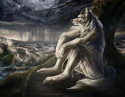
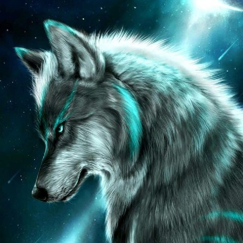

The Magnificent World of Wolves
Nature's Most Social Predators
Wolves are among the most fascinating and misunderstood creatures in the animal kingdom. These magnificent predators have roamed the earth for millions of years, adapting to various environments and developing complex social structures that rival those of many human societies. Their intelligence, loyalty, and hunting prowess have made them both feared and revered throughout human history.
The social dynamics of wolf packs are incredibly sophisticated, with each member playing a crucial role in the survival of the group. Contrary to popular belief, wolf packs are typically family units consisting of parents and their offspring, working together to hunt, raise young, and protect their territory. Their communication methods include howling, body language, and scent marking, creating a complex network of information sharing that ensures the pack's success in the wild.
| Wolf Species | Habitat | Average Weight | Pack Size | Conservation Status |
|---|---|---|---|---|
| Gray Wolf | Forests, tundra, grasslands | 70-110 lbs | 5-8 individuals | Least Concern |
| Red Wolf | Southeastern US forests | 45-80 lbs | 3-5 individuals | Critically Endangered |
| Mexican Wolf | Southwestern US, Mexico | 50-85 lbs | 4-6 individuals | Endangered |
| Eurasian Wolf | Europe, Asia | 70-130 lbs | 6-10 individuals | Least Concern |
| Arctic Wolf | Arctic regions | 75-125 lbs | 7-12 individuals | Least Concern |